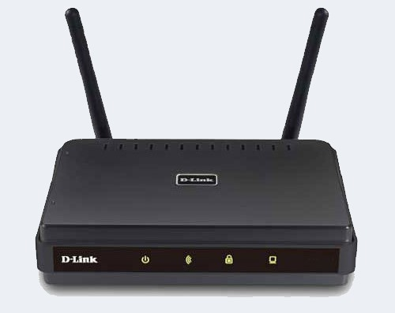
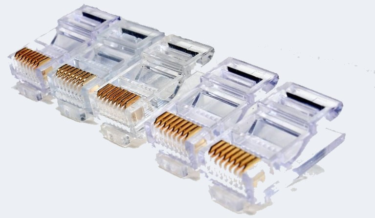
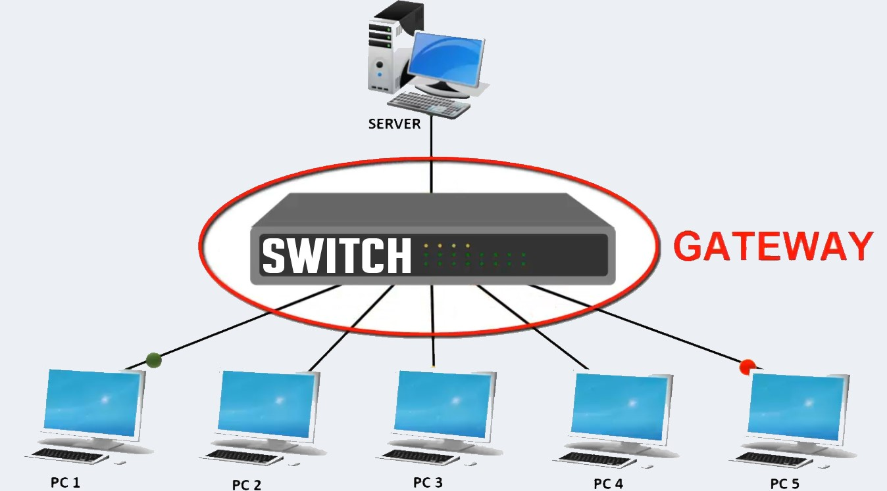
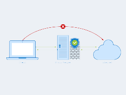
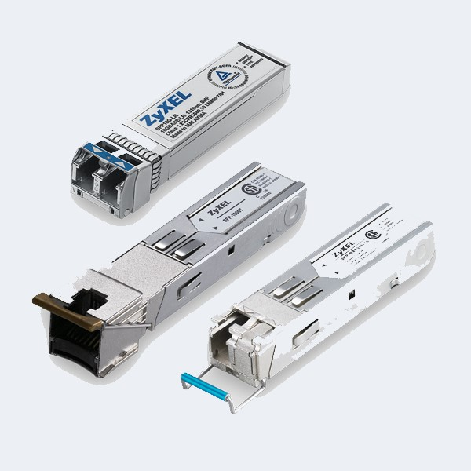
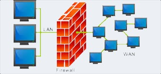

Theory
Networking Devices-Hardware devices that are used to connect computers, printers, fax machines and other electronic devices to a network are called network devices. These devices transfer data in a fast, secure and correct way over same or different networks. Network devices may be inter-network or intra-network. Some devices are installed on the device, like NIC card or RJ45 connector, whereas some are part of the network, like router, switch, etc.
- Modem
- RJ45 connector
- Ethernet Card
- Router
- Switch
- Flooding
- Forwarding
- Filtering
- Broadcasting
- Gateway
- Wifi Card
- Hubs
- Bridge
- Repeater
- Network Interface Card (NIC)
- MAU and Patch Panel
- Proxy
- Transceiver
- Firewall
Modem is a device that enables a computer to send or receive data over telephone or cable lines. The main function of the modem is to convert digital signal into analog and vice versa. Modem is a combination of two devices − modulator and demodulator. The modulator converts digital data into analog data when the data is being sent by the computer. The demodulator converts analog data signals into digital data when it is being received by the computer.
There are 3 types of Modems:- Simplex − A simplex modem can transfer data in only one direction, from digital device to network (modulator) or network to digital device (demodulator). Half duplex − A half-duplex modem has the capacity to transfer data in both the directions but only one at a time. Full duplex − A full duplex modem can transmit data in both the directions simultaneously.
RJ45 is the acronym for Registered Jack 45. RJ45 connector is an 8-pin jack used by devices to physically connect to Ethernet based local area networks (LANs). Ethernet is a technology that defines protocols for establishing a LAN. The cable used for Ethernet LANs are twisted pair ones and have RJ45 connector pins at both ends. These pins go into the corresponding socket on devices and connect the device to the network.
Ethernet card, also known as network interface card (NIC), is a hardware component used by computers to connect to Ethernet LAN and communicate with other devices on the LAN. The earliest Ethernet cards were external to the system and needed to be installed manually. In modern computer systems, it is an internal hardware component. The NIC has RJ45 socket where the network cable is physically plugged in .Modern cards support fast Ethernets up to a speed of 100 Mbps. Some cards even have capacity of 1 Gbps.

A router is a network layer hardware device that transmits data from one LAN to another if both networks support the same set of protocols. So a router is typically connected to at least two LANs and the internet service provider (ISP). It receives its data in the form of packets, which are data frames with their destination address added. Router also strengthens the signals before transmitting them. That is why it is also called repeater.
There are 2 types of Routing Tables:
Static
Dynamic
Switch is a network device that connects other devices to Ethernet networks through twisted pair cables. It uses packet switching technique to receive, store and forward data packets on the network. The switch maintains a list of network addresses of all the devices connected to it. On receiving a packet, it checks the destination address and transmits the packet to the correct port. Before forwarding, the packets are checked for collision and other network errors. The data is transmitted in full duplex mode. Ways in which Switch works:-
Gateway is a network device used to connect two or more dissimilar networks. In networking parlance, networks that use different protocols are dissimilar networks. A gateway usually is a computer with multiple NICs connected to different networks.Gateways provide translation between networking technologies such as Open System Interconnection (OSI) and Transmission Control Protocol/Internet Protocol (TCP/IP). Because of this, gateways connect two or more autonomous networks, each with its own routing algorithms, protocols, topology, domain name service, and network administration procedures and policies. Gateway uses packet switching technique to transmit data from one network to another. In this way it is similar to a router, the only difference being a router can transmit data only over networks that use the same protocols.
Wi-Fi is the acronym for wireless fidelity. Wi-Fi technology is used to achieve wireless connection to any network. Wi-Fi card is a card used to connect any device to the local network wirelessly. The physical area of the network which provides internet access through Wi-Fi is called Wi-Fi hotspot. Hotspots can be set up at home, office or any public space. Hotspots themselves are connected to the network through wires. A Wi-Fi card is used to add capabilities like teleconferencing, downloading digital camera images, video chat, etc. to old devices. Modern devices come with their in-built wireless network adapter.

Hubs connect multiple computer networking devices together. A hub also acts as a repeater in that it amplifies signals that deteriorate after traveling long distances over connecting cables. A hub is the simplest in the family of network connecting devices because it connects LAN components with identical protocols.
A hub can be used with both digital and analog data, provided its settings have been configured to prepare for the formatting of the incoming data.
Hubs do not perform packet filtering or addressing functions; they just send data packets to all connected devices. Hubs operate at the Physical layer of the Open Systems Interconnection (OSI) model.
There are two types of hubs:
a. simple port
b. multiple port
Hub falls in two categories:
Active Hub: They are smarter than the passive hubs. They not only provide the path for the data signals in fact they regenerate, concentrate and strengthen the signals before sending them to their destinations. Active hubs are also termed as ‘repeaters’.
Passive Hub: They are more like point contact for the wires to build in the physical network. They have nothing to do with modifying the signals.
Bridges are used to connect two or more hosts or network segments together. The basic role of bridges in network architecture is storing and forwarding frames between the different segments that the bridge connects. They use hardware Media Access Control (MAC) addresses for transferring frames. By looking at the MAC address of the devices connected to each segment, bridges can forward the data or block it from crossing. Bridges can also be used to connect two physical LANs into a larger logical LAN.
Types of Bridges:
There are mainly three types in which bridges can be characterized:
Transparent Bridge: As the name signifies, it appears to be transparent for the other devices on the network. The other devices are ignorant of its existence. It only blocks or forwards the data as per the MAC address.
Source Route Bridge: It derives its name from the fact that the path which the packet takes through the network is implanted within the packet. It is mainly used in Token ring networks.
Translational Bridge: The process of conversion takes place via Translational Bridge. It converts the data format of one networking to another. For instance Token ring to Ethernet and vice versa.
A repeater is an electronic device that amplifies the signal it receives. You can think of a repeater as a device which receives a signal and retransmits it at a higher level or higher power so that the signal can cover longer distances, more than 100 meters for standard LAN cables. Repeaters work on the Physical layer.
There are several different types of repeaters; a telephone repeater is an amplifier in a telephone line, an optical repeater is an optoelectronic circuit that amplifies the light beam in an optical fiber cable; and a radio repeater is a radio receiver and transmitter that retransmits a radio signal.
broadcast relay station is a repeater used in broadcast radio and television.
NIC allows a networking device to communicate with the other networking device.
NIC converts the data packets between two different data transmission technologies. A PC uses parallel data transmission technology to transmit the data between its internal parts while the media that provides connectivity between different PCs uses serial data transmission technology.
There are 2 types of NIC:-
a. Media Specific
b. Network Device Specific
.jpg)
MAU and Patch Panel look like the Hub, but they are different. MAU (Multi Access Unit) is the sibling of Hub for the token ring network. Differences between Hub and MAU are the following: -
Hub is used for the Ethernet Network while the MAU is used for the Token ring network.
Hub creates logically star topology while MAU creates logically ring topology.
Proxy is used to hide the internal network from the external world. It can be a dedicated device or can be an application software. Once it is configured, all communication goes through it. Since external devices cannot access the internal devices directly, they cannot tamper with the internal devices.
Transceiver is a small device that has the capability of receiving and sending both types of signals; analog and digital. Usually, it is inbuilt in network interface card. But, it is also available as an individual device. It detects the type of signal from the network wire and converts the passing signal accordingly. For example, a transceiver is attached with a device that transmits signal in digital form. Now suppose, this device is connected with the network wire that uses analog form for data transmission. In this case, the transceiver converts digital signals in the analog signals before placing them in the network wire.
In computing, a firewall is a network security system that monitors and controls incoming and outgoing network traffic based on predetermined security rules.A firewall typically establishes a barrier between a trusted internal network and untrusted external network, such as the Internet. Firewalls are often categorized as either network firewalls or host-based firewalls. Network firewalls filter traffic between two or more networks and run on network hardware. Host-based firewalls run on host computers and control network traffic in and out of those machines.
